Discover Seychelles Through Our Gallery
Welcome to the WonderWorld Gallery! Explore the breathtaking beauty of Seychelles through a collection of photographs capturing its stunning beaches, lush tropical landscapes, fascinating wildlife, rich culture and unforgettable island experiences. Let these images inspire your next adventure.
Paradise Beaches
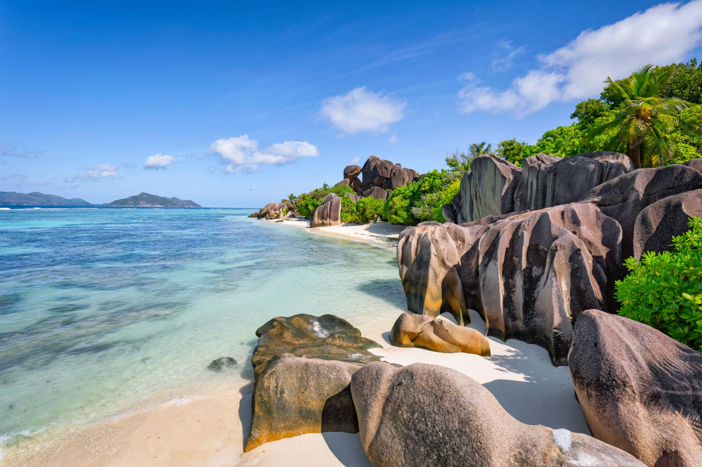
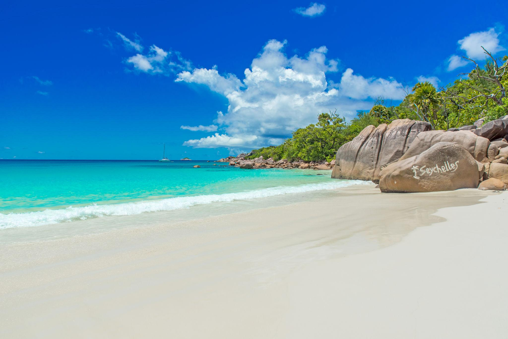
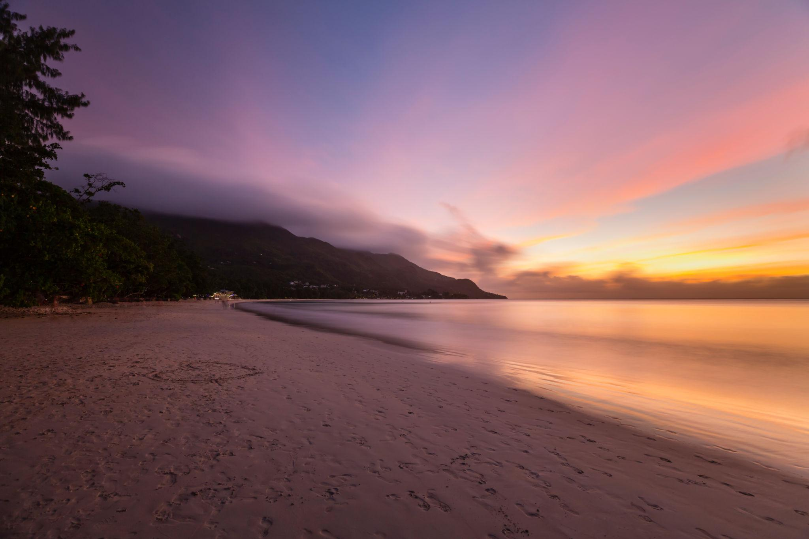
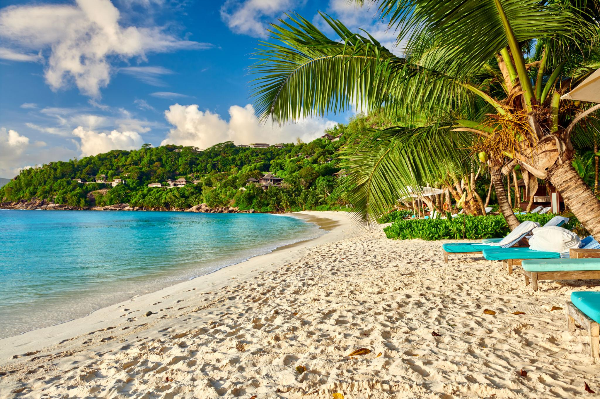
Nature and Wildlife
Seychelles is famous for its unique wildlife and Natural Environment
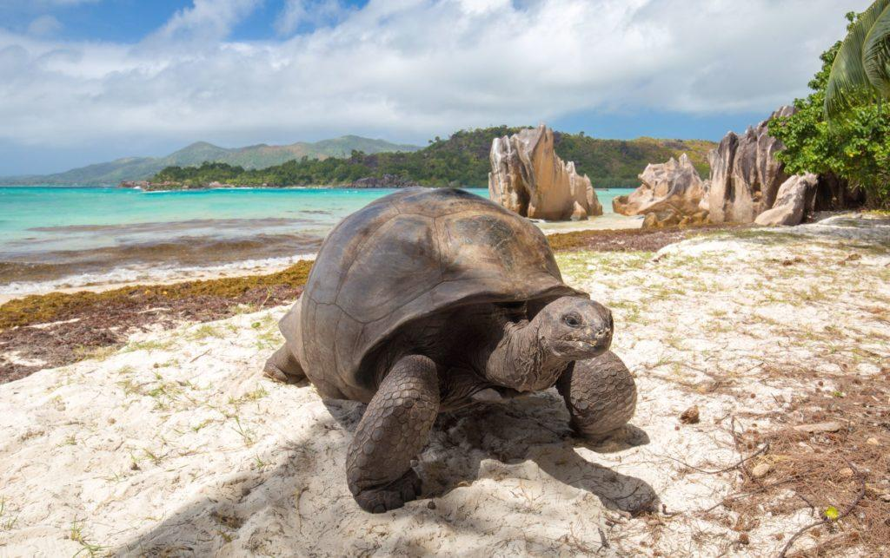
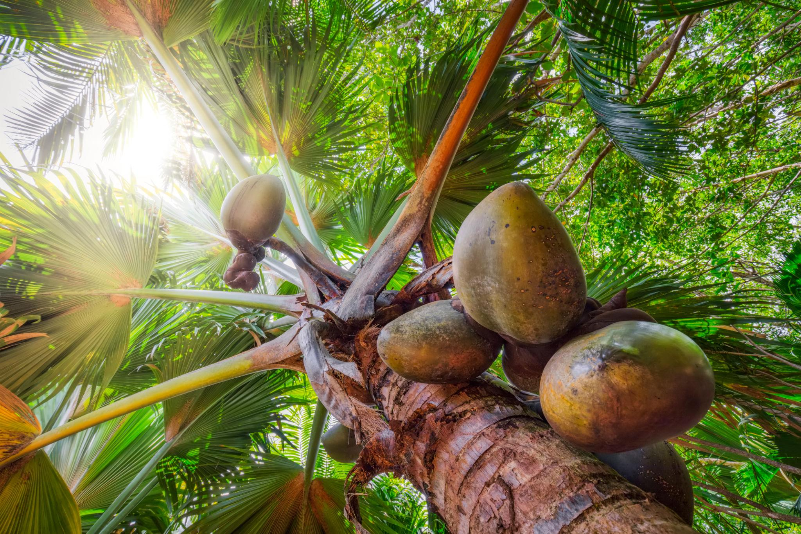
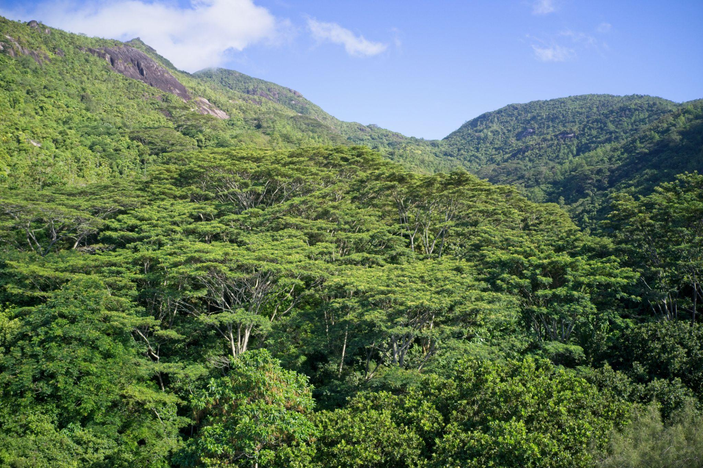
Culture and Seychellois Lifestyle
This section show visitors some of the traditions and everyday experiences of Seychelles.
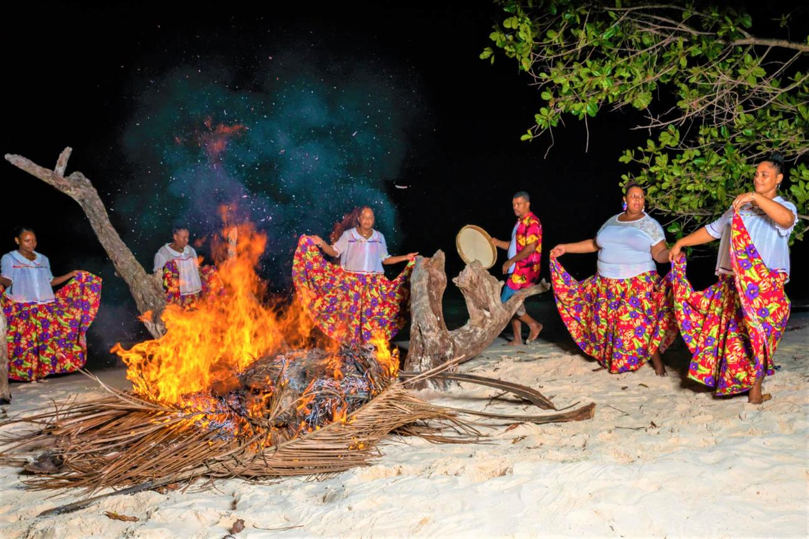
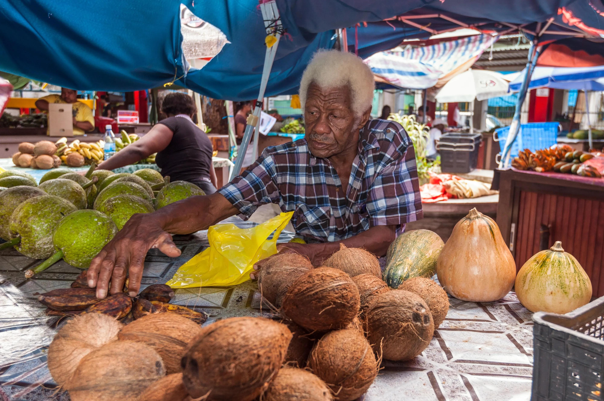
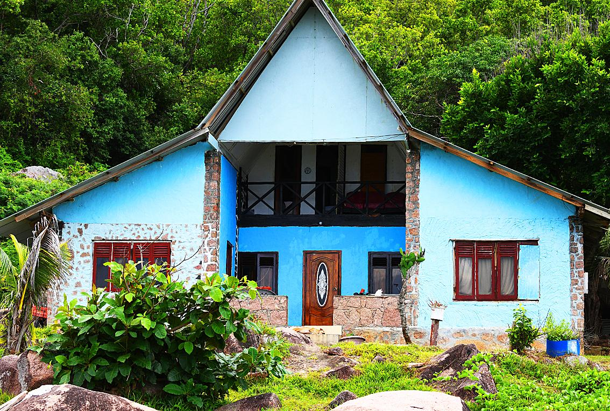
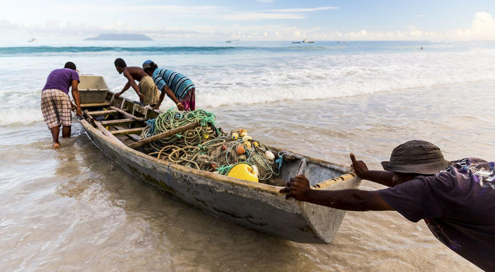
Island Adventure and Experiences
This section showcases activities visitors can enjoy
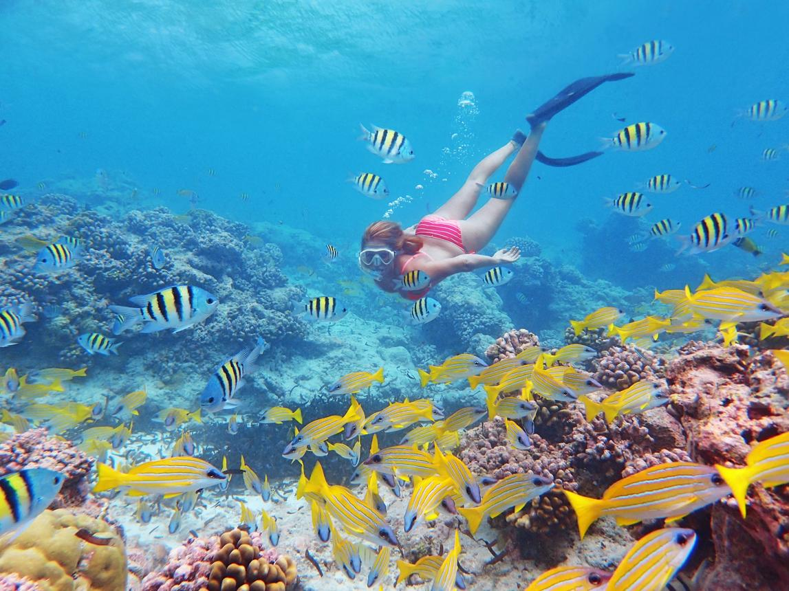
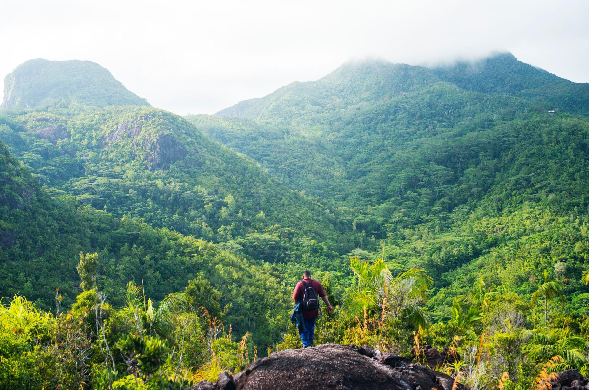
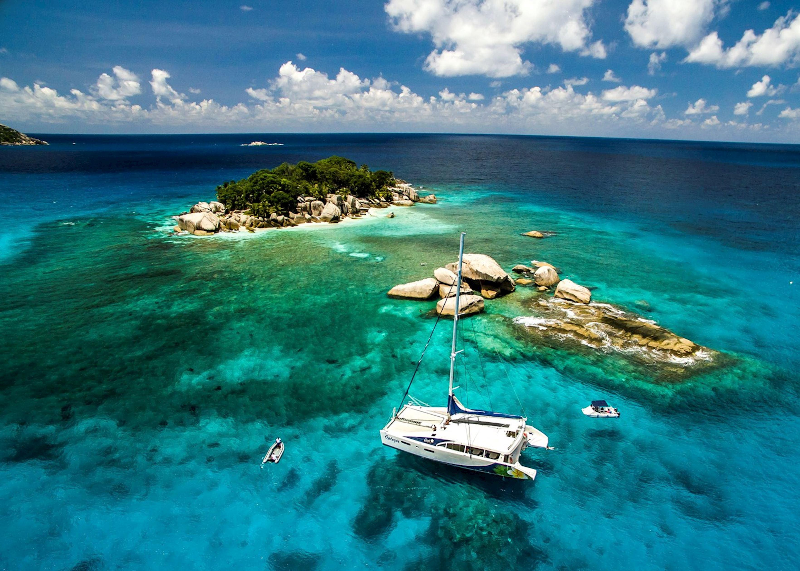
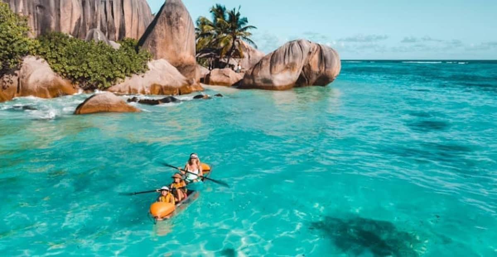
Your Seychelles Adventure Awaits!
Have these beautiful images inspired you to discover Seychelles? Explore our destination guide to learn more about the islands, attractions, culture and unforgettable experiences waiting for you. Explore Seychelles